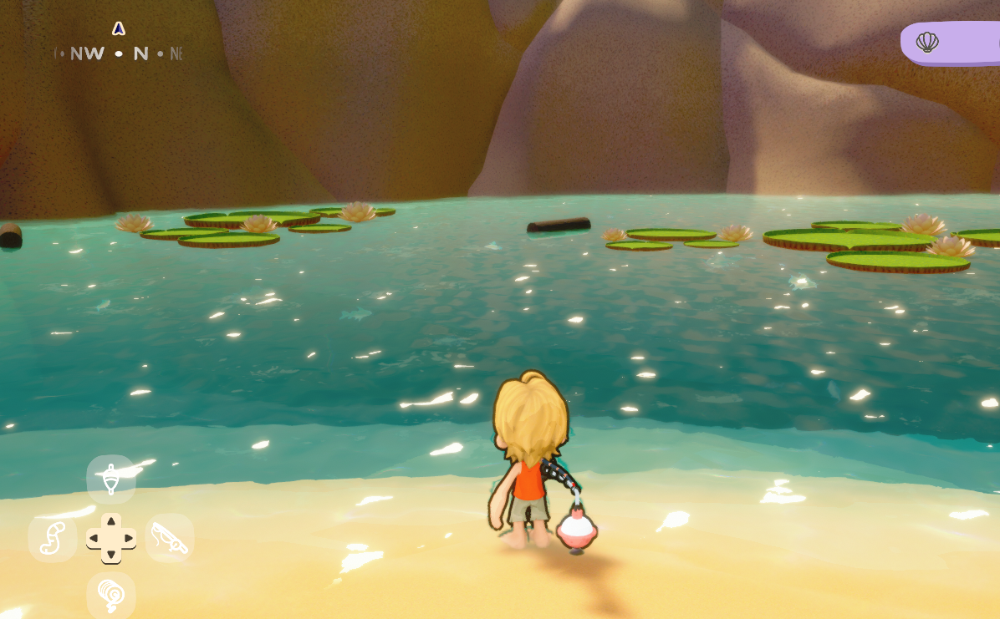
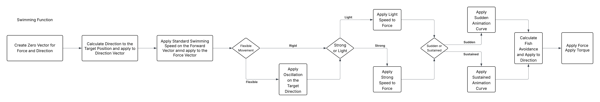
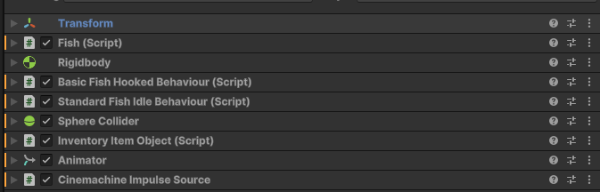
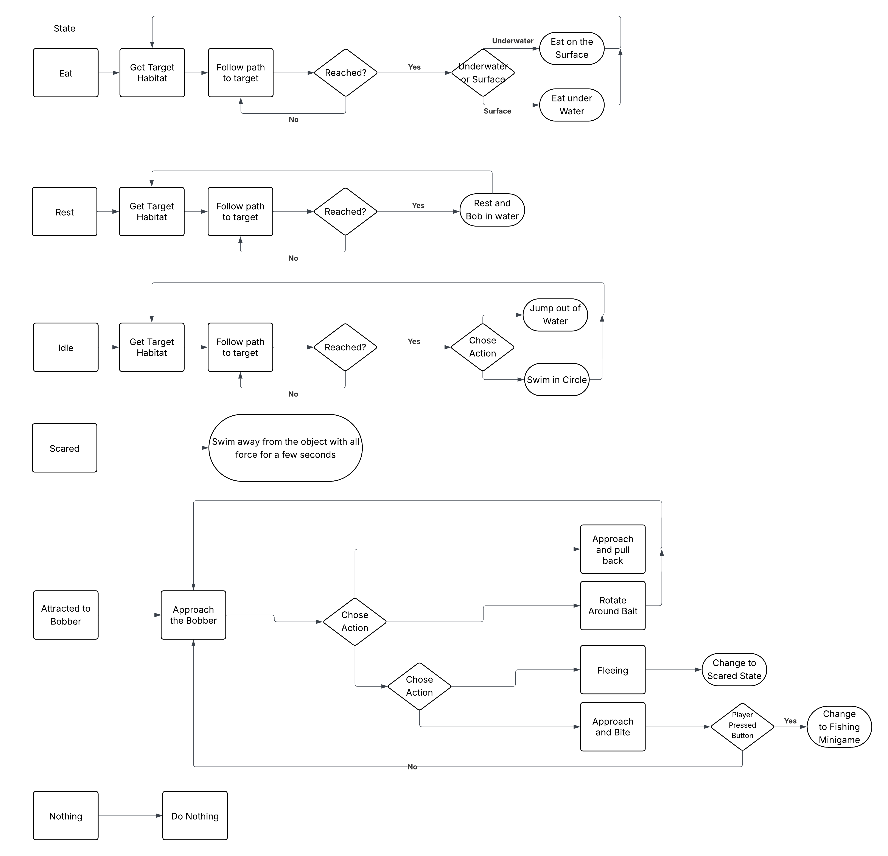
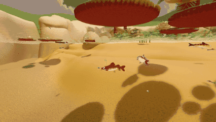
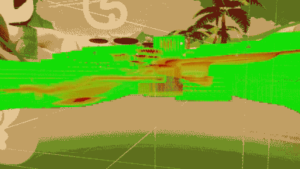
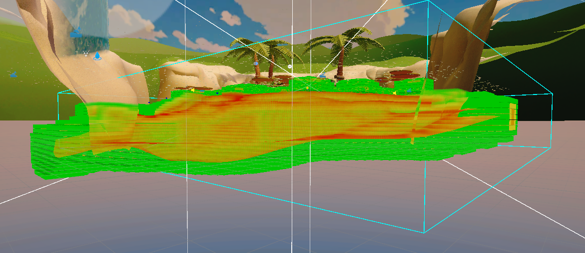
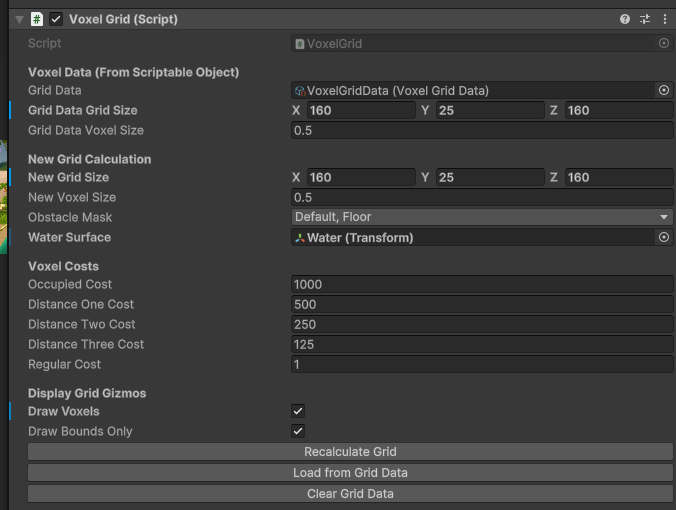
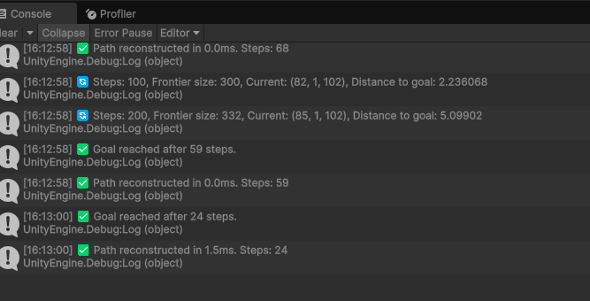
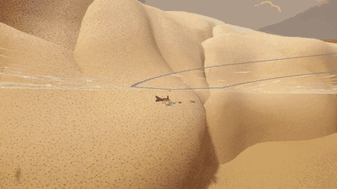

I was responsible for one thing at Derailed Arts, end to end: the fish. From an empty Unity project to a playable demo shown at Develop Brighton — movement, senses, decision-making, population control, and 3D navigation through a volume of water.
My first professional games role, and my first credit on a game.

dev), Miro as the living design doc, DiscordThe Lakelings is a cosy fishing game where you catch fish, sell them, upgrade your gear and unlock more of the lake. Its hook is what happens to the ones that get away: released or escaped fish evolve into Nemefish — rarer, harder to catch, and able to talk. A language model generates each Nemefish's personality from its history with the player, issues quests in character, and lets them swim to other players' lakes carrying stories of past encounters.
The prototype had to prove the atmosphere, the fishing loop and a first version of the Nemefish system — originally for a Barclays investor event, and after that was cancelled, for Develop Brighton.
My job was to make the lake feel alive enough that catching something from it mattered.
Fish existed in two modes. Hooked — the arcade fishing minigame — belonged to Josh, the other programmer. Free — everything a fish does when nobody is holding a rod at it — was mine. That split covers more than it sounds like:
Joseph came from theatre production, and handed me a design vocabulary rather than a spec: Laban Efforts, a system actors use to physicalise character. He wanted fish whose personality was legible purely from how they moved.
| Effort | States | What I mapped it to |
|---|---|---|
| Direction | Direct / Indirect | straight line to target, or a slaloming path |
| Weight | Light / Strong | acceleration |
| Speed | Quick / Sustained | velocity |
Eight combinations, eight distinct movement personalities — before any per-fish tuning. On top of that sits a variance percentage that nudges each individual's values off its breed baseline, so fish of the same breed are recognisably related without being clones.

Mechanically it is deliberately simple: each fish is a Rigidbody that can only push itself forward. Turning is rotation applied to the body, not a change of velocity.
There are no animations. Every behaviour — surface feeding, resting, jumping, circling — is physics and rotation only. Surface feeding turns the fish toward a random point near the waterline, accelerates it gently upward, then fires a force backwards the moment it arrives, so it reads as a fish snapping at an insect and darting away. Watching it move, you assume an animator was involved. There wasn't one.
Behaviours run as coroutines, one at a time per fish, each signalling completion so the main loop can assign the next target.

Fish needed to notice things. The Scanner runs on a configurable frame interval rather than every frame, and does three jobs in one pass:
That third one is a fail-safe. Autonomous agents in a closed volume will eventually find a way to wedge themselves into something; the ray cast means they always get themselves back out.

The lower layer is a finite state machine — Eat, Rest, Attracted to Bobber, Idle. Idle jumps out of the water or swims a circle. Rest goes to a nest habitat and bobs gently. Eat runs surface or underwater feeding depending on context.
The upper layer is Utility AI with four needs — Hunger, Energy, Idle, Fear. Hunger climbs over time. Energy drains with movement, scaled by speed. Fear accumulates near larger fish until the fish flees. Idle wins when nothing else is pressing. Each tick the dominant utility sets the FSM state, and the actions the fish performs feed back into those values.
It is a small system, and that is the point: four floats and a selection function produce a lake where fish are eating, resting, wandering and fleeing at different times for legible reasons, without any of it being scripted.

Designers needed to be able to say "this lake has this many of that fish" and have it be true.
The system is two-tier. Each waterbody tracks its own fish counts and holds references to its habitats — fish query it for habitat positions when they change state. A population manager sits above all waterbodies, owns the spawn and despawn logic, checks counts every few frames, and issues spawn orders wherever a lake is under target.
Designers set exact targets per breed-and-size combination, per lake. Adding a second lake meant attaching the waterbody script and registering it — no changes to the manager.
The manager also carries a "fish always bite" toggle, which existed purely so Josh could iterate on the fishing minigame without waiting for a fish to become interested. Small tools like that turned out to matter more to the team's pace than anything elegant I wrote.
Everything above worked, and the fish still swam into the beach.
The test level had a curved shoreline with habitats on opposite sides. Fish taking the direct route ploughed into the sandbank — or out of the water entirely. Unity's NavMesh solves walking across a surface; fish move through a volume.
I voxelised the water. A generator script builds the grid in the editor, writes it into a ScriptableObject, and is then disabled at runtime — so play mode reads precomputed data and pays no build cost. Each voxel stores a position, an occupied flag and a cost.
The grid is anchored to the water body: it begins at the surface and extends downward, which makes "inside the grid" and "inside the water" the same statement. A whole category of out-of-bounds bugs simply never existed.



The pathfinder was never wrong. The cost function just didn't yet encode "fish look stupid at the surface."
Then the fish started surfacing. The water surface was almost entirely unoccupied, so it was the cheapest region in the grid — and A* correctly routed fish up to the top, across, and back down. Technically optimal, visually absurd.
The fix was a deliberate extra penalty on the top row of voxels, so fish stay submerged unless their target habitat is genuinely at the surface. It is my favourite bug from the project, because nothing was broken — the search was doing exactly what I had told it to value.
The first working version came together quickly and destroyed the framerate. With a full population requesting paths, the game hit one to two frames per second.
What fixed it:


I wrote the first A* implementation myself, and it was too slow. With the deadline closing, Joseph asked me to use ChatGPT to work through the optimisation. That stung my pride at the time, and it was the right call — he had paid for two developers and a deadline, not for my ego. I still had to work out which optimisations applied, implement them into an existing system and verify each one; I can explain every change in that list and why it worked. The lesson I actually took was about proportion: my discomfort was worth less than the demo.
The fish already sensed their neighbours, so collision avoidance borrowed from Boids — an avoidance vector averaged across nearby fish, folded into the movement force.
The first attempt failed in an interesting way: at high population, fish settled into a static lattice, each perfectly avoiding its neighbours and none making progress. Mutual avoidance had found an equilibrium. I weakened the avoidance strength and added size filtering — fish only avoid individuals larger than themselves — which broke the symmetry and got the lake moving again.
Schooling behaviour was designed, and cut at feature lock.
I built a CharacterController-based fish; Josh had independently built a
physics-based one that was better and already integrated with his gameplay. Mine did not fit his
systems. We binned it, I adopted his base, and we split responsibilities explicitly — free
behaviour to me, hooked behaviour to him — with weekly meetings to keep it that way. Losing two
weeks to unclear ownership in a four-person team taught me to establish interfaces before writing
anything.
On advice from our AI consultant I prototyped the behaviour-tree package, and it went well in isolation. Back-porting it into an established codebase was the problem: full integration needed Josh to restructure significant parts of his code, and he was out of time. I laid out three options for Joseph — full integration, a hybrid, or drop it — and recommended against the hybrid, because the mess would outlive the demo. We dropped it. The lesson is not about the package; it is that a foundational architecture choice has to be made early or not at all.
All fish behaviour lived in a single well-commented, region-organised file that was still genuinely hard to navigate. What I would build instead: ScriptableObject behaviours held in per-state lists and selected at runtime — a smaller core, and a drag-and-drop overview of available behaviours for designers.
No formal QA — we tested each other's systems. I would fish while testing my own fish; Josh would harass the wildlife while testing his rod. Joseph reviewed weekly and gave detailed feedback, and several systems went through multiple rounds because of it: the population manager went from breeds-with-random-sizes, to controlled sizes, to exact breed-and-size targets.
Git with per-developer branches merged into dev. A Miro board served as the living
design document and status tracker — which worked, and also taught me that documentation rots when
nobody prunes it.
The hardest part was not technical. I worked remotely, alone, on my first professional project, and spent a fair share of it convinced I was the weakest person in the room. The weekly-meeting cadence was what helped: reporting progress out loud made it much harder to quietly spiral.
The prototype shipped and was demoed at Develop Brighton and Brilliant Indie Treasures — a lake of two fish breeds moving with distinguishable personalities, making autonomous decisions, navigating around terrain, reacting to bait and fleeing from bigger fish.
Standing in a room watching strangers fish in something I had spent five months on removed any remaining doubt about the career.